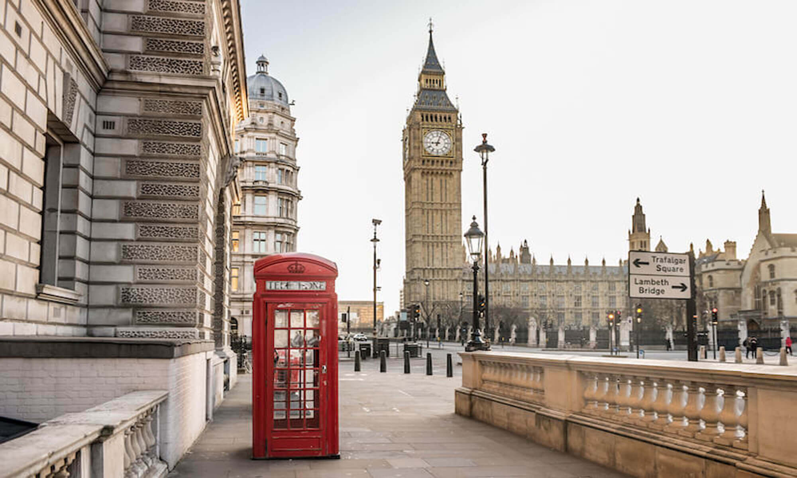
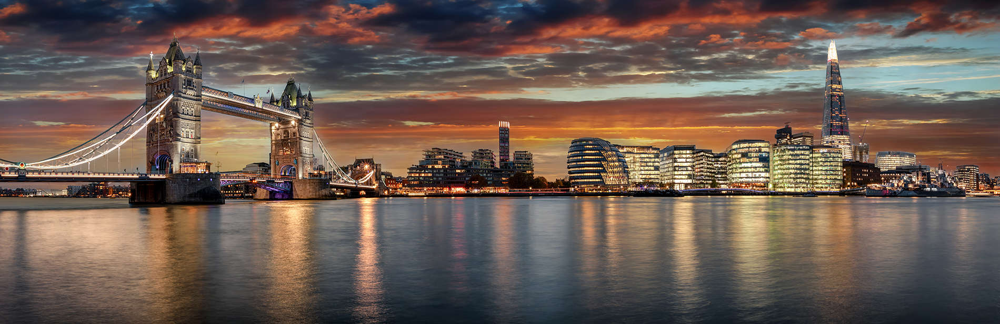
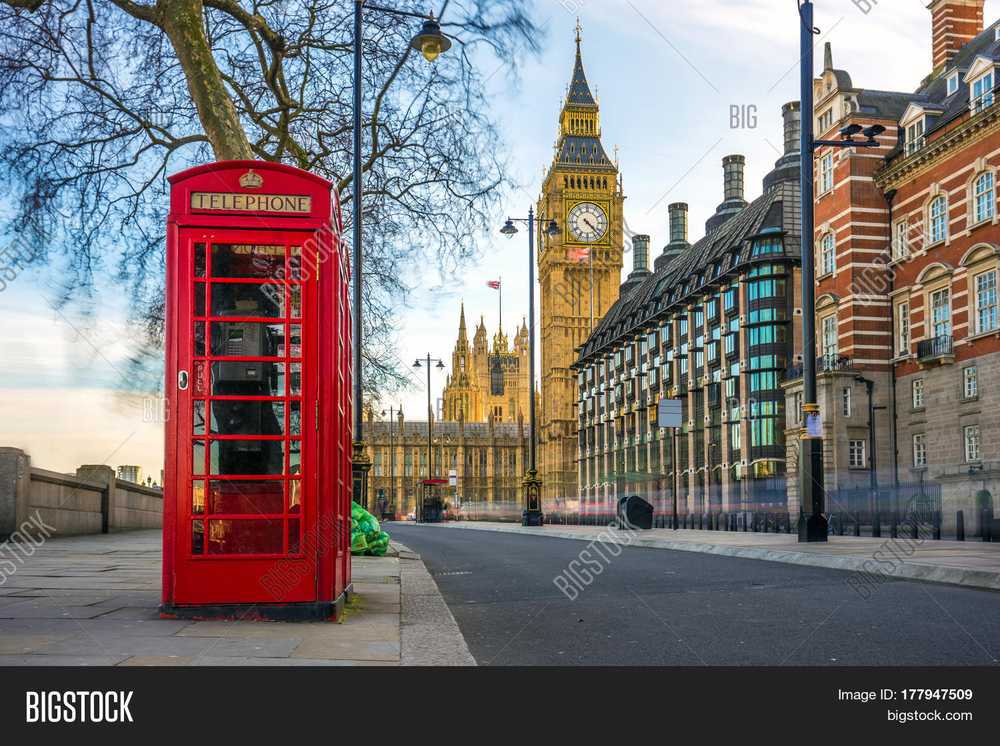

London

Лондон все още е Лондон и пандемията ни накара да оценим други аспекти на градския живот - критични неща, като хладен, дишащ въздух, който е възможен от дърветата на града и неговите зелени, отворени пейзажи

Лондон е на 16-то място по качеството на своите преживявания на открито, много от които идват под формата на грандиозни паркове, които са наследството на десетки бивши селски имоти, които са служили като ловни полета за поколения крале и кралици.

Основните забележителности на Лондон може да са от хилядолетия, но столичните магазини, барове, хотели и ресторанти продължават да се развиват на почти седмична база.